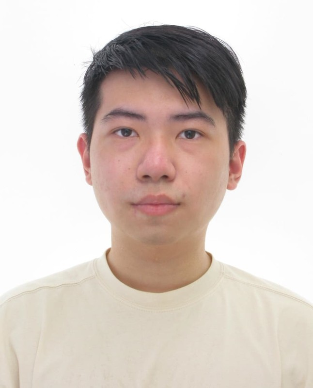

ACADEMIC PROFILE
HSIU-CHI PAI
Prospective PhD Applicant
in Political Science
in Political Science
EDUCATION
M.A. in Public PolicyNational Taiwan University · Taiwan
B.A. in Political ScienceNational Chengchi University · Taiwan
CONNECT
Scan to Save ContactContact details · vCard
Scan to View ORCIDAcademic researcher profile